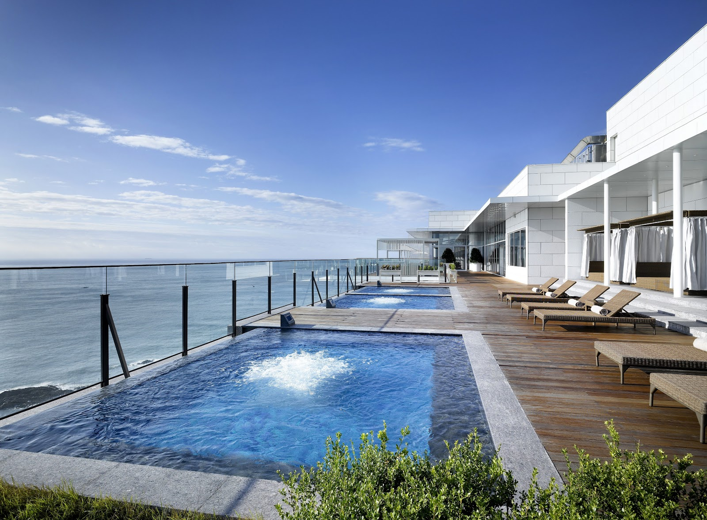

Ananti at Busan Cove: A Coastal Resort Stay in Gijang
Busan is often associated with lively beaches, markets, and neighborhoods in the city center, but its coastline stretches well beyond those familiar areas. Ananti at Busan Cove is in Gijang, on the city’s northeastern side, and offers a different kind of trip: one centered on the hotel and its coastal setting rather than on sightseeing from morning to night.
That distinction matters when choosing where to stay. If you want a base for exploring central Busan every day, compare travel times before booking. If you would rather slow down, spend more time at your accommodation, and treat the coast as part of the experience, Ananti at Busan Cove may suit your plans.
What to expect from the location
Gijang is part of Busan, but it is not in the city’s central visitor districts. The hotel’s address places it along Gijanghaean-ro, in a coastal area where the setting is a key part of the appeal. For visitors, this can mean a more removed atmosphere than a stay near major downtown sights—but it also means that journeys between the hotel and other parts of Busan need planning.
Think about your itinerary before choosing this location. A trip built around relaxing at the resort and exploring nearby coastal areas may work well from here. A schedule with frequent visits to central neighborhoods, attractions, or evening venues could involve more time in transit. Use the hotel’s exact address to check routes for your travel dates, and compare driving and public-transport options rather than assuming they will take the same amount of time.
For international visitors, it is useful to save the Korean address as well as the English hotel name before setting out. Mapping apps may display place names differently, and having the full address ready can make it easier to confirm the destination with a driver or at a station.
Choosing a room and planning your stay
At a coastal resort, the view can be an important part of the room choice. Do not assume that every room faces the sea: check the room description carefully and confirm what “view” means for the specific category you are considering. Room names, layouts, and inclusions can vary, so compare the official descriptions before paying. If a particular view, bed arrangement, or accessibility feature is essential, contact the property to verify it directly.
Also check what your booking includes. Do not assume that access to every facility, activity, or service is included in the room rate. Details can depend on the room, booking conditions, and date. The official website is the best starting point for current information; confirm any important terms with the hotel before finalizing your plans.
Because this is a resort-style stay, leave room in your schedule to enjoy the property rather than treating it only as a place to sleep. If you have a short stay, decide in advance whether your priority is time at the hotel, nearby coastal exploring, or traveling farther into Busan. That simple choice can help you avoid spending the trip rushing between a distant base and a packed sightseeing list.
How to decide if it is right for you
Ananti at Busan Cove is worth considering if you value a coastal setting and prefer a stay where the hotel itself is part of the trip. It may be less convenient if your main goal is to be close to the city center or to move between many Busan neighborhoods throughout the day. Neither approach is automatically better; the right choice depends on how you want to use your time.
Google Maps currently shows a rating of 4.6 out of 5 from 11,239 reviews. That large review sample can help you get a general sense of guest experiences, but read recent comments for details that matter to your visit, such as room condition, noise, service, or facility access. Individual experiences can differ, and policies or offerings may change.
Good to know
- Check the map before booking: Confirm the hotel’s position against the places you plan to visit, especially if you expect to spend substantial time in central Busan.
- Verify current details: Use the official website for up-to-date room descriptions, facilities, policies, and contact information.
- Confirm transport for your dates: Routes and journey times depend on your starting point and travel conditions. Check a live map or transit planner before departure.
- Keep the address handy: Save “268-32 Gijanghaean-ro, Gijang, Busan” on your phone for navigation.
- Read recent reviews selectively: Focus on comments relevant to your needs instead of relying on the overall score alone.
Useful links
FAQ
Is Ananti at Busan Cove in central Busan?
No. It is in Gijang, on Busan’s northeastern side. Check the distance and route to your planned destinations before booking.
Is this a good choice for a trip focused on the hotel?
It may be a good fit if you want a coastal, resort-style stay and plan to spend meaningful time at the property. Confirm the facilities and inclusions you want directly with the hotel.
Are sea views guaranteed?
Do not assume so. Room views depend on the specific room category; review its description and confirm with the property if the view is important to you.